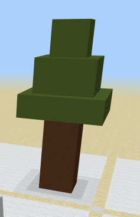
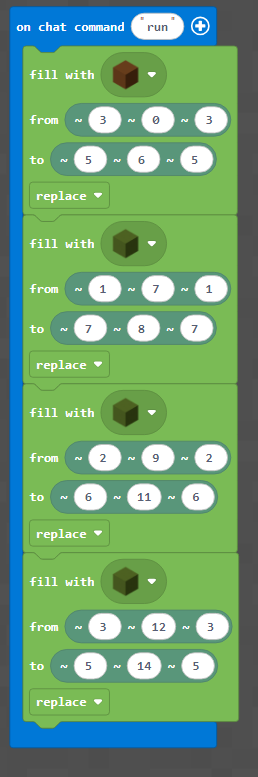

Topic: Layer Up — Terrain & Trees · Course: 3D Coordinates · Time: about 45 minutes
You already know the floor — (x, z), across and forward. This week you go up. One fill makes a solid box between two corners. Raise the middle number (y) and the box gets taller; stack wider and narrower boxes and flat ground turns into trees, hills, and towers.
Your mission this week: build this tree. A fat brown trunk going up, then a green cap of boxes that get smaller as they rise.
🌳 Build this

🧱 The idea
• A 3 × 3 brown trunk, stacked up the y axis.
• A green cap of 3 boxes: widest at the bottom, each one above is narrower and higher.
• Every box is one fill between two corners.
pos( x , y , z ) → ( across , up , forward )
🌱 Big idea: the 2nd number (y) is height. Raise it and the box grows up. Stretch the 1st (x) and 3rd (z) to make a box wider.
Read each set of steps. Look at each column — remember 1st = x, 2nd = y, 3rd = z. Then write what you think you will see.
fill BROWN from (3, 0, 3) to (5, 6, 5)
X goes 3 → 5 and Z goes 3 → 5, so how wide is the trunk across and deep? Y goes 0 → 6, so how tall is it?
fill GREEN from (1, 7, 1) to (7, 8, 7)
fill GREEN from (2, 9, 2) to (6, 11, 6)
Both are green boxes. Look at the x and z columns — which box is wider? Look at the y column — which box sits higher?
fill GREEN from (3, 12, 3) to (5, 14, 5)
This is the smallest cap box. Its y starts at 12 — is it near the top of the tree or the bottom?
Each block of code below was meant to do something, but it is broken. Read what the code is supposed to do, then rewrite it so it works. After that, explain why the original was wrong and why your fix works.
Bug A — This should stack a second cap box on top of the first. Right now both boxes use the same y, so the second lands on the same level and nothing stacks up.
fill GREEN from (1, 7, 1) to (7, 8, 7)
fill GREEN from (2, 7, 2) to (6, 8, 6)
Hint: the 2nd number (y) is height. Both boxes stop at y = 8. Which number must go higher?
Write the fixed code:
Why was it wrong? Why does your fix work?
Bug B — This should build the trunk going up at x = 3–5, z = 3–5. Right now it makes a flat slab on the ground with no height.
fill BROWN from (3, 0, 3) to (5, 0, 5)
Hint: check the 2nd column (y) in both corners.
Write the fixed code:
Why was it wrong? Why does your fix work?
Bug C — This green box should be a wide cap that sticks out past the trunk. Right now it is the same width as the trunk, so there is no cap.
fill GREEN from (3, 7, 3) to (5, 8, 5)
Hint: the trunk's x and z go 3 → 5. To overhang, the cap's 1st (x) and 3rd (z) must be wider.
Write the fixed code:
Why was it wrong? Why does your fix work?
Now switch to your homework world and build the tree from the top of this sheet. Here is the exact recipe. Notice the colours: x · y · z in every corner.
🧱 Blocks

🐍 Python
def on_run():
blocks.fill(BROWN_CONCRETE,
pos(3, 0, 3), pos(5, 6, 5),
FillOperation.REPLACE)
blocks.fill(GREEN_CONCRETE,
pos(1, 7, 1), pos(7, 8, 7),
FillOperation.REPLACE)
# ...two more cap boxes: y = 9–11, then y = 12–14
player.on_chat("run", on_run)When you finish, send a photo or video of your tree, then explain what you did. Use these sentence starters — write 4 to 6 sentences total.
First, I built the trunk by …
My trunk is … tall and … wide because the x, y, z numbers were …
The number that grew for each new cap box was y, which means …
My cap gets narrower because each box's x and z …
One tricky moment was when …
If I had more time, I would …
Take a video on your phone (or a parent's phone) while you show your tree in the world. Talk through it like you are teaching someone who has only seen flat pictures before. Try to use these words: layer, fill, x, y, z, trunk, cap.
- Show your tree from the bottom of the trunk up to the top of the cap.
- Point at one cap box and read its corner out loud — say which number is x, which is y, which is z.
- Show two boxes and say which one is wider and why that makes a cap.
- Say in your own words what each of x, y, and z does.
Write what you will say in your video. Use the space below to plan it before you record — you can read from it while filming.
Send this worksheet + your walkthrough video to teacher on KakaoTalk.